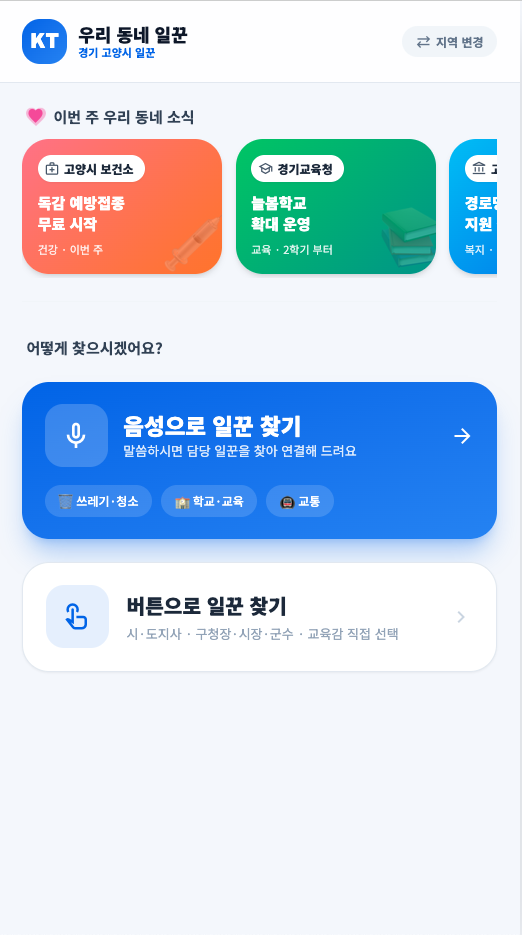
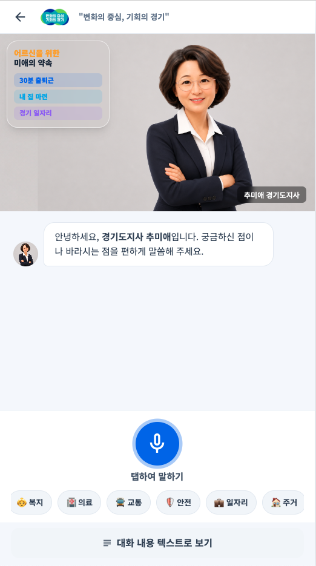
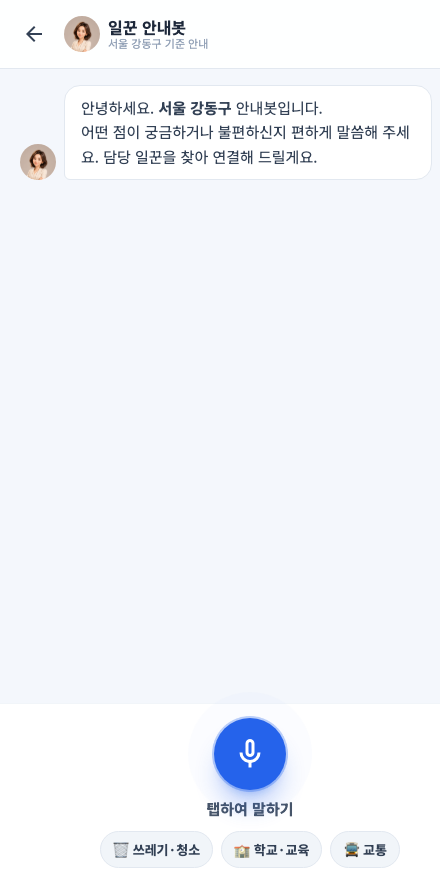
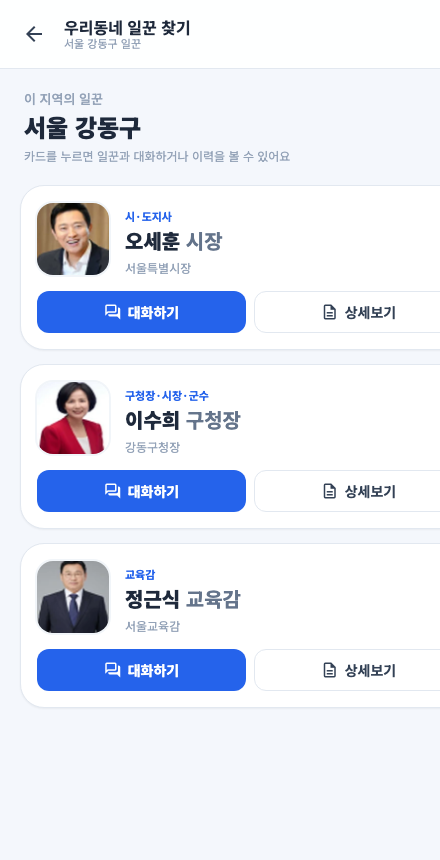
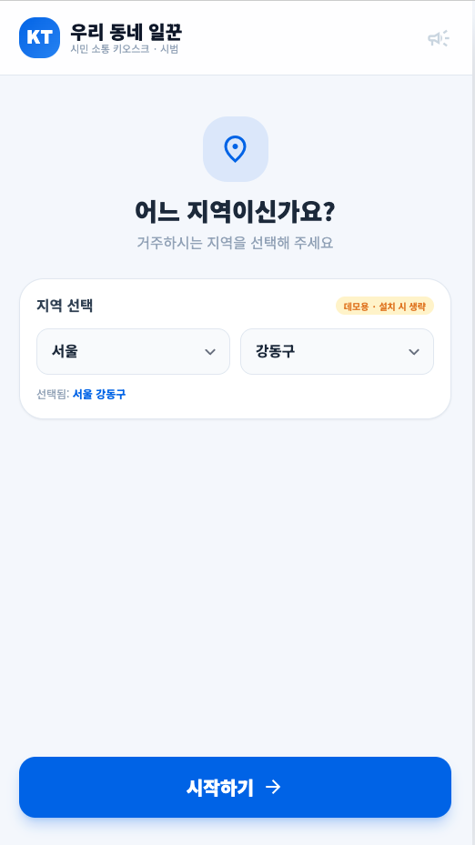
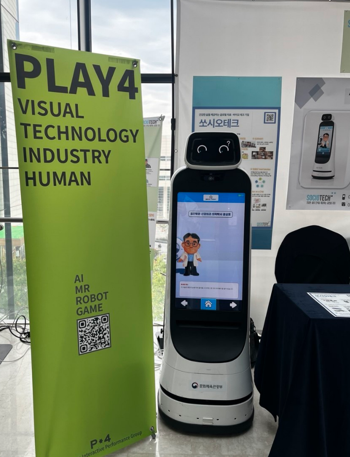
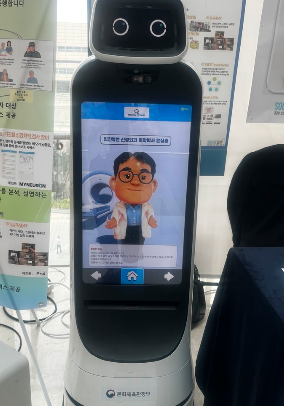
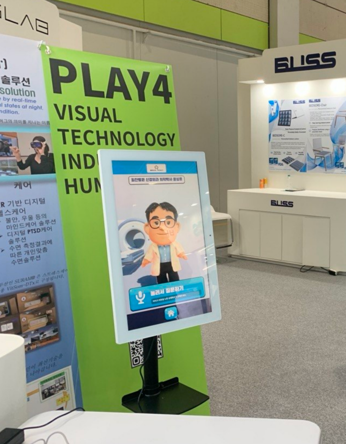

KT 제휴·도입 제안 (초안)
어르신 맞춤 시민 소통 키오스크
“말만 하면, 우리 동네 당선인과 공공기관이 답합니다.”
디지털이 어려운 어르신도 음성으로 우리 동네
시·도지사·구청장·교육감을 만나고, 지자체·교육청 소식을 받아봅니다.


WHY NOW · 배경
대한민국은 2024년 65세 이상 인구 비중 20%를 넘어선 초고령사회입니다. 행정 수요는 늘지만, 어르신이 닿을 수 있는 창구는 오히려 줄고 있습니다.
모바일 앱·정부24·온라인 민원은 어르신에게 여전히 높은 벽. ‘쓸 줄 몰라’ 행정에서 멀어집니다.
단체장이 모든 경로당·마을을 직접 찾아다니기엔 물리적 한계. 주민은 “내 목소리가 닿지 않는다”고 느낍니다.
경로당엔 이미 키오스크가 깔려 있지만, 담을 콘텐츠가 없어 대부분 ‘빈 화면’으로 잠들어 있습니다.
문제는 ‘기기’가 아니라, 쓸 수 있는 콘텐츠의 부재입니다.
02 · 솔루션
글자 크게 · 음성 우선 · 단계 최소화로 설계했습니다.
설치 지역으로 고정되어 어르신은 선택 없이 우리 동네 화면을 봅니다.
보건소·구청·교육청 등 발신 기관 라벨과 함께 생활 소식을 노출합니다.
고민을 말하면 시·도지사·구청장·교육감 중 담당자를 자동 분류·연결합니다.
당선인 아바타와 음성 대화, 답변은 음성+자막 동시 제공. 대화는 텍스트로도 확인.
※ AI 아바타는 후보자 제공 자료를 학습한 가상 안내이며, 본인의 실제 음성·발언이 아님을 명확히 고지합니다.



03 · 이해관계자별 가치
04 · 기대 성과 및 실행 방안
정성 · 어르신 정보 접근성 향상, 당선인-주민 소통 상시화, 공공정보 도달률 개선
정량 · 이용·대화 건수, 소식 노출·연결 수, 입점 기관 수·재게재율, 설치 대수, 만족도
| 단계 | 기간(예시) | 내용 |
|---|---|---|
| PoC | 1~2개월 | 1개 지자체 시범 설치, 어르신 사용성 검증 |
| 확산 | 3~6개월 | 자치구·교육청 입점 확대, 소식·홍보 운영 |
| 정식 | 6개월~ | 권역별 키오스크 망 구축, 정량 성과 리포트 |
05 · 검증된 실행력
AI 아바타·키오스크를 힘찬병원에 납품하고 국가 전시에서 선보인 검증된 기술입니다. 같은 역량을 어르신 행정 소통으로 확장합니다.



🏥 힘찬병원 납품
AI 닥터 아바타를 힘찬병원 현장에 실제 납품·운영
🤖 키오스크 로봇 탑재
자율주행 키오스크 로봇에 AI 아바타 대화 탑재
🇰🇷 국가 전시 참여
문화체육관광부 등 공식 전시(PLAY4)에서 시연
검증된 이 기술을, KT와 함께 어르신 행정 소통으로 확장하겠습니다.
※ 본 문서는 내부 검토용 초안입니다. 수치·모델·기관명은 협의 단계에서 확정합니다.